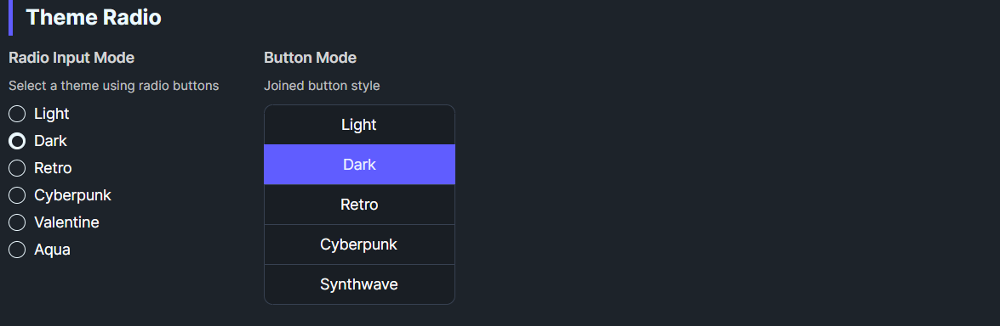

DaisyThemeRadio is a theme-selecting RadioButton. When checked, it applies its ThemeName via DaisyThemeManager. It can render as a standard radio or styled button (Mode=Button) and supports Daisy size presets. It syncs checked state when themes change externally.
| Property | Description |
|---|---|
ThemeName |
Theme to apply when checked (e.g., “Synthwave”, “Retro”). |
Mode |
Radio (default) or Button display. |
Size |
ExtraSmall–ExtraLarge for button/radio sizing. |
IsChecked=True, calls DaisyThemeManager.ApplyTheme(ThemeName).ThemeChanged to check itself if the current theme matches ThemeName.GroupName across multiple radios to provide a theme picker.<!-- Radio-style theme chooser -->
<StackPanel>
<controls:DaisyThemeRadio GroupName="themes" ThemeName="Light" Content="Light" IsChecked="True" />
<controls:DaisyThemeRadio GroupName="themes" ThemeName="Dark" Content="Dark" />
<controls:DaisyThemeRadio GroupName="themes" ThemeName="Synthwave" Content="Synthwave" />
</StackPanel>
<!-- Button-style -->
<controls:DaisyThemeRadio Mode="Button" Size="Small" GroupName="themes" ThemeName="Pastel" Content="Pastel" />
<controls:DaisyThemeRadio Mode="Button" Size="Small" GroupName="themes" ThemeName="Retro" Content="Retro" />Themes/Palettes.Mode="Button" for grid/list theme pickers; Radio for inline lists.GroupName consistently so only one theme is active at a time.DaisyThemeDropdown or DaisyProductThemeDropdown.